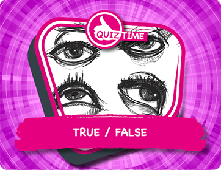

While you are doing your first drawing, you need to stay still. You should do the drawing from exactly the same spot throughout the drawing.
If you do need to get up and do something else, come back to the same spot and put your eyes back at the same point to resume your drawing. From this fixed point look carefully at your object.